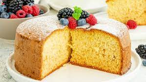

Bizcocho 1-2-3
En ocasiones, la imposibilidad de encontrar ciertos productos o simplemente el encontrarnos con la
despensa medio vacía, nos obliga a despertar nuestra imaginación en la cocina. ¡Compruébalo!
Tarta galleta principe
Este pastel de galletas Príncipe se prepara sin harina, solo con las galletas molidas y otros ingredientes
sencillos. El resultado es una variedad de bizcocho muy consistente y de sabor intenso, un dulce diferente y
original que te va a sorprender. ¡Compruébalo!